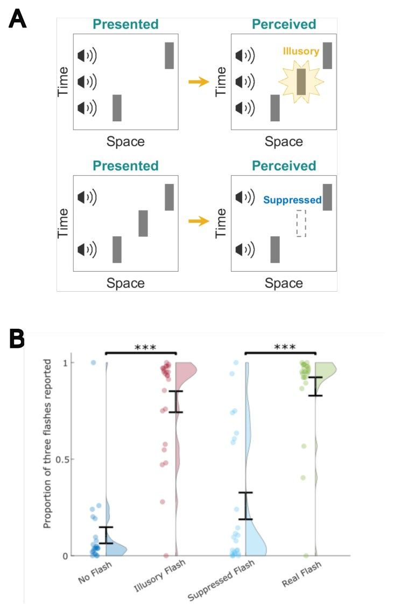
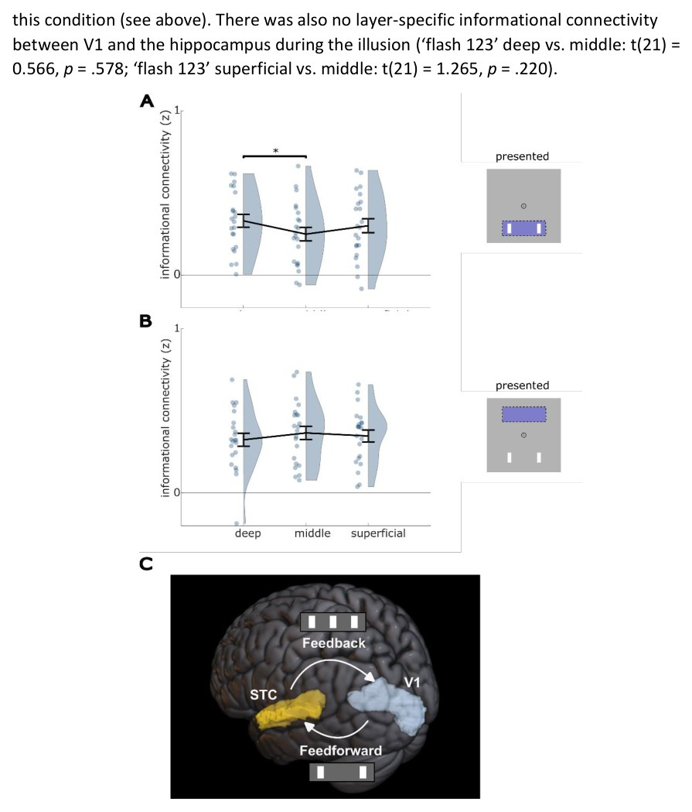
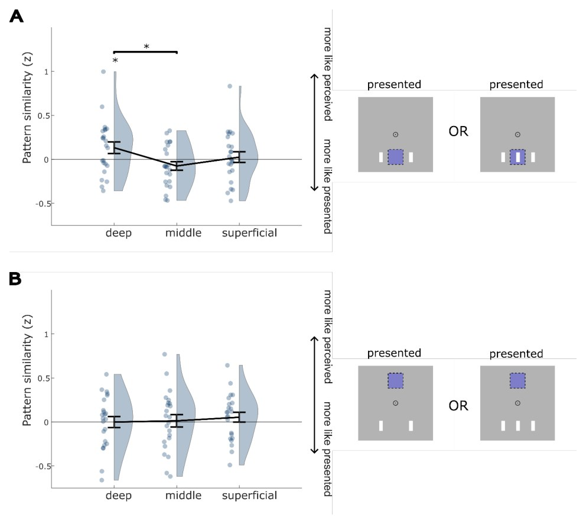
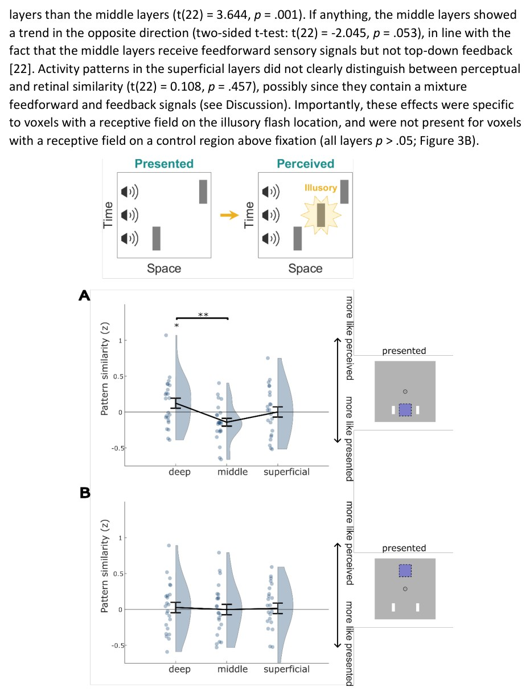
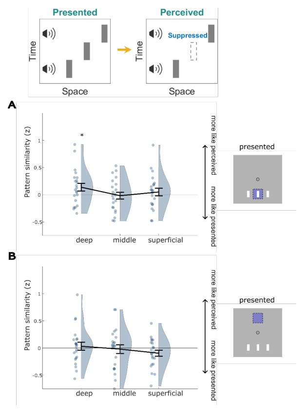

Miyamiz voqelikni orqadan turib birlamchi koʻrish qobigʻida qayta tiklaydi
{kind=link}

Oddiy idrak tashqi dunyoning toʻgʻridan-toʻgʻri translyatsiyasidek tuyulsa-da, miya koʻpincha manzarani orqadan turib yigʻadi. Olimlarning aniqlashicha, tovush signallari hosil qiluvchi koʻrish illyuziyalari qobiqning birlamchi koʻrish zonasining chuqur qatlamlari faolligini oʻzgartiradi. Bu miya oʻtgan signallarni keyingi maʼlumotlar asosida qayta hisoblaydigan postdiksiya mexanizmi mavjudligini isbotlaydi. Bu jarayonda vaqtinchalik koʻp sensorli hududlardan keladigan teskari aloqa ishtirok etadi.
Asosiysi
- Idrak chakka qobigʻidan keluvchi teskari aloqa orqali orqadan turib tuzatiladi
- 7T MRT yordamida V1 ning chuqur qatlamlaridagi signallar qayd etildi
- Illuzor chaqnashlar V1 da haqiqiy stimullar kabi faollik naqshlarini hosil qiladi
Batafsil
Uzoq vaqt davomida neyrobiologiya asosan prediksiyaga — miyaning oʻtmish tajribasiga tayanib kelajakni bashorat qilish qobiliyatiga eʼtibor qaratdi. Biroq, bir necha yuz millisekund kechikish bilan keluvchi maʼlumotlar allaqachon sodir boʻlgan stimulyatorni qabul qilishni oʻzgartira oladigan postdiksiya hodisasi ham mavjud. Shu paytgacha bu tuzatish axborotni qayta ishlashning qaysi bosqichida sodir boʻlishi nomaʼlum edi. Tadqiqotchilar buning uchun koʻp sensorli sohalardan birlamchi koʻrish qobigʻiga (V1) teskari aloqa javob beradi, deb taxmin qilishdi.
Ushbu gipotezani tekshirish uchun olimlar tovush signali mavjud boʻlmagan yorugʻlik chaqnashini keltirib chiqaradigan yoki haqiqiy chaqnashni bostiradigan ikkita kross-modal illyuziyadan foydalandilar. Tajriba davomida 23 nafar ishtirokchi yuqori quvvatli 7-tesla tomografida skanerlandi, bu esa qobiqning alohida qatlamlari faolligini ajratib olish imkonini berdi. Retinotopik xaritani tuzish V1 ning kerakli sohasini aniq ajratishga yordam berdi.
Natijalar shuni koʻrsatdiki, chuqur qatlamlardagi faollik naqshlari haqiqiy idrakka mos keladi. Bogʻliqlik tahlili yuqori chakka qobigʻini teskari aloqa manbai sifatida koʻrsatdi. Shunday qilib, V1 nafaqat joriy stimulni qabul qiladi, balki idrakni retrospektiv tarzda qayta koʻrib chiqishda ham qatnashadi.
Cheklovlar
Tadqiqot 23 nafar ishtirokchidan iborat kichik guruhda va sun'iy illyuziyalar yordamida o'tkazildi.
Maqolaning to'liq tarjimasi
Annotatsiya
Idrokning eng jumboqli jihatlaridan biri bu postdiktsiya bo'lib, unda keyingi ma'lumotlar oldingi stimul qanday idrok etilishini o'zgartirishi mumkin. Bu idrok tashqi dunyoning jonli efiri emas, balki post-faktik rekonstruktsiya ekanligini ko'rsatadi. Miya idrokni qanday qilib qayta ko'rib chiqadi? Sensor ierarxiyadagi qayta aloqali ishlov berish keyingi ma'lumotlar unga ta'sir qilishi uchun yetarli darajada oldingi ma'lumotni ushlab turishi mumkinligi taxmin qilingan. Biz bu yuqori tartibli multisensor hududlardan keladigan teskari aloqaga birlamchi ko'rish po'stlog'idagi (V1) oldingi vizual stimullarning namoyon bo'lishini o'zgartirish imkonini beradi, degan farazni ilgari surdik.
Muhim
Postdiktiv illyuziyalar V1 ning chuqur qatlamlarida real idroklarga o'xshash faollik naqshlarini keltirib chiqaradi, bu esa orqaga qaratilgan teskari aloqadan dalolat beradi.
Ushbu tadqiqotda biz tonning borligi yoki yo'qligi mos ravishda xayoliy chaqnashning idrok etilishini yoki haqiqatan ham taqdim etilgan chaqnashning idrok etilishini bostirishini belgilaydigan ikkita postdiktiv illyutsiya yordamida ushbu gipotezani sinab ko'rdik. Bu bizga retinotopik makonda sensor kirishlardan illyuzor idroklarni aks ettiruvchi neyron signallarini ajratib olish imkonini berdi. Illyuziyalarni boshdan kechirgan ishtirokchilardan (N = 23) 7T qatlamga xos fMRT ma'lumotlarini to'pladik.
Izoh
7T (Tesla) quvvatli fMRT yordamida miya po'stlog'ining alohida qatlamlaridagi faollikni aniqlash mumkin, bu esa axborot oqimi yo'nalishini — signal tashqaridan kelayotganini yoki teskari aloqa orqali kelayotganini aniqlash imkonini beradi.
Biz postdiktiv illyuziyalar xuddi real idroklardagi kabi faollik naqshlarini, xususan V1 ning chuqur qatlamlarida keltirib chiqarishini aniqladik, bu esa postdiktiv teskari aloqadan dalolat beradi. Axborot bog'liqligi tahlillari ushbu teskari aloqaning manbai Yuqori chakka po'stlog'i (Superior Temporal Cortex, STC) ekanligini ko'rsatdi. Biz shunday xulosaga keldiki, idrokning postdiktiv montaji V1 da aks etadi va yuqori tartibli sensor po'stlog'i bilan kechiktirilgan teskari aloqa halqasi orqali amalga oshiriladi. Bu V1 ning idrok etishdagi rolini kengaytiradi: hozirgi zamonni aks ettiruvchi sensor kirishlar va kelajak bashoratlarini qabul qilishdan tashqari, u idrokni keyinchalik qayta ko'rib chiqishda ham qatnashadi.
Kirish
Idrok — bu miya sensor ma'lumotlar va oldingi tajribadan olingan taxminlar kombinatsiyasiga tayanib, dunyoning joriy noma'lum holatini taxmin qilishga harakat qiladigan jarayon. Biroq, miya vaqt bo'ylab ushbu ikki ma'lumot manbasini qanday integratsiya qilishi haqida kam narsa ma'lum. Ilmiy muloqot shu vaqtgacha asosan miyaning oldingi ma'lumotlarni idrok etishga, ya'ni bashorat qilishga qanday integratsiya qilishiga qaratilgan edi. Biroq, postdiksiya — bu ogohlantirishdan keyin — bir necha yuz millisekundlik vaqt oralig'ida keladigan ma'lumot uning qanday idrok etilishiga ta'sir qiladigan o'zaro to'ldiruvchi hodisa. Postdiksiya shuni ko'rsatadiki, intuitiv ravishda qarama-qarshi bo'lsa-da, bizning idrokimiz tashqi dunyoning jonli efiri emas, balki miyada keyinchalik quriladi. Postdiktsiyaning neyron mexanizmlarini o'rganish orqali biz miyaning ong tajribamizni qanday yaratishiga oydinlik kiritishimiz mumkin.
Muhim
Postdiksiya idrok tashqi stimulyatsiyadan keyingi yuzlab millisekundlar ichida shakllanishini ko'rsatadi.
Idrok keyingi kelayotgan ma'lumotlar ta'sirida o'zgarishi qanday mumkin? Sensor ishlov berishning qaysidir bosqichida kechikish bo'lishi kerak, bu keyingi ma'lumotlarga oldingi signallarni quvib yetishiga imkon beradi va ikkala manba ham integratsiyalashishi mumkin bo'lgan vaqt oynasini yaratadi. Ushbu kechikishni tushuntirish uchun ikkita mantiqiy, ammo sinovdan o'tmagan nazariya taklif qilingan. To'g'ridan-to'g'ri bog'lanish nazariyasi (feedforward) neyronlarning vaqtinchalik integratsiya oynasi kortikal ierarxiya bo'ylab o'sishi faktiga tayanadi, bu esa keyingi ma'lumotlarga yuqori tartibli sensor ishlov berish hududlarida (masalan, vaqtinchalik bo'lakda) oldingi signallarni quvib yetishga imkon beradi. Aksincha, teskari aloqa nazariyasi kortikal ierarxiya bo'ylab qayta ishlovchi teskari aloqa oldingi signallarga birlamchi sensor korteksda keyingi ma'lumotlar ta'sir qilish imkoniyatini taqdim etishini taklif qiladi. Ya'ni, dastlabki to'g'ridan-to'g'ri oqimdan so'ng, sensor signallar yuqori sensor zonalarning o'zaro aloqalari tufayli kechikish bilan birlamchi sensor korteksga qaytariladi va keyingi ma'lumotlarga uni modulyatsiya qilish imkonini beradi. Ushbu nazariyalarni farqlash bizning idrok tajribamiz kortikal ierarxiyada qanday qurilganligi haqida tushuncha beradi.
Izoh
Kortikal ierarxiya miyaning axborotni oddiy sezgi zonalaridan murakkabroq tahlil markazlariga bosqichma-bosqich uzatish tuzilishidir.
Ikki nazariya o'rtasidagi asosiy farqlardan biri postdiktiv idrokda birlamchi sensor korteksning rolidir. Ya'ni, teskari aloqa nazariyasi birlamchi sensor korteks postdiktiv tarzda qayta ko'rib chiqilgan idrokni aks ettirishini bashorat qiladi, to'g'ridan-to'g'ri bog'lanish nazariyasi esa buni bashorat qilmaydi, chunki integratsiya faqat kengaytirilgan vaqtinchalik retseptiv maydonlarga ega bo'lgan yuqori tartibli sensor hududlarda sodir bo'ladi. Postdiksiya kontekstidan tashqari, sensor korteksga qayta aloqa idrokni qurishda muhim rol o'ynashi taklif qilingan. Masalan, birlamchi ko'rish korteksiga (V1) retinotopik jihatdan o'ziga xos teskari aloqa Kanizsa illyuziyasining asosi ekanligi ko'rsatilgan. Biz sensor korteksga qayta aloqaning bu muhim roli postdiktiv idrokka ham tatbiq etilishiga oid gipotezani ilgari surdik.
Ushbu gipotezani sinab ko'rish uchun biz ikkita mustahkam kross-modal postdiktiv illyuziyadan foydalandik. Bir illyuziyada vizual chaqnash idroki boshqacha tarzda stimulyatsiya qilinmagan retinotopik joyda eshitish stimuli tomonidan keltirib chiqariladi, ikkinchi illyuziyada taqdim etilgan chaqnash eshitish stimulining yo'qligi sababli idrok etishda bostiriladi (1A-rasm). Birgalikda ushbu illyuziyalar V1 dagi potentsial postdiktiv signallarni o'rganish uchun ideal sinov maydonchasini taqdim etadi, chunki ular xayoliy idroklarni retinal kirishlardan to'liq ajratish imkonini beradi (S1-rasm). Biz illyuziya ko'p sensorli kortikal hududlardan (ya'ni yuqori vaqtinchalik korteksdan) teskari aloqa natijasi sifatida V1 ning chuqur qatlamlarida aks etishini taxmin qildik. Biz bu gipotezani ultra yuqori aniqlikdagi 7T fMRT (0.8 mm voksel) yordamida qatlamga xos BOLD signallarini o'lchash va xayoliy chaqnashning joylashishiga sozlangan V1 hududini ajratib olish uchun populyatsiya retseptiv maydoni (pRF) xaritasi bilan birlashtirgan holda sinab ko'rdik.
Ehtiyot bo'ling
Tadqiqot 7T fMRT va maxsus illyuziyalarga tayanadi, natijalarni boshqa sharoitlarga ehtiyotkorlik bilan tatbiq etish lozim.
Natijalarimizni oldindan bayon qilsak, biz keyinchalik qurilgan idrok mazmuni V1 ning chuqur qatlamlarida aks etganligi haqida dalillarni topdik, bu postdiktsiyaning teskari aloqa modelini qo'llab-quvvatlaydi. Ushbu topilmalar birlamchi ko'rish korteksidagi pre-perseptual sensor ma'lumotlar perseptiv xulosa chiqarish orqali keyinchalik tuzatilishiga mos keladi.
Natijalar
Xulq-atvor tajribalari va neyrovizualizatsiya natijalari
Biz fMRI skanerlash vaqtida ikkita audio-vizual postdikativ illyuziyani muvaffaqiyatli keltirib chiqardik va nazorat sharoitlarini tasdiqladik (1B-rasm). «Illyuzor chaqnash» sharoitida o‘rtadagi tovush signali illyuzor chaqnashni keltirib chiqardi: ishtirokchilar atigi ikkita chaqnash taqdim etilganiga qaramay, 0,83 ± 0,04 (o‘rtacha ± o‘rtacha xatolik) hollarda uchta chaqnash haqida xabar berishdi. Bu ulush qo‘shimcha tovushsiz urinishlarga (ya’ni «Chaqnashsiz» sharoiti, 0,08 ± 0,02; W(22) = 3,615, p < 0,001) qaraganda sezilarli darajada yuqori edi. Ikkinchi illyuzor sharoitda, «Bosilgan chaqnash», tovushning yo‘qligi haqiqiy chaqnashning idrok etilishini bostirdi: uchta chaqnash haqida atigi 0,25 ± 0,07 hollarda xabar berildi, bu uchta chaqnash va uchta tovush bo‘lgan urinishlarga (ya’ni «Haqiqiy chaqnash» sharoiti, 0,92 ± 0,03; W(22) = 3,601, p < 0,001) qaraganda sezilarli darajada kam. Ishtirokchilar ham haqiqiy, ham illyuzor idroklariga nisbatan yuqori darajada ishonch bildirishdi (S2-rasm).
Muhim
Xulq-atvor testlari illyuziyalarni keltirib chiqarish samaradorligini tasdiqladi: «Illyuzor chaqnash» sharoitida ishtirokchilar 83% hollarda ikkita o‘rniga uchta chaqnash ko‘rishdi, «Bosilgan chaqnash» sharoitida esa haqiqiy chaqnashlarni idrok etish 25% gacha bostirildi.
Biz ushbu postdikativ illyuziyalar V1 qatlamlaridagi BOLD-faollik naqshlarida aks etishini aniqlashga harakat qildik. Har bir postdikativ illyuziya uchun biz «idrok naqshlari o‘xshashligi»ni hisobladik, bu illyuziya tomonidan qo‘zg‘atilgan BOLD-faollik naqshi va tegishli haqiqiy idrok tomonidan qo‘zg‘atilgan faollik naqshi (ya’ni «Illyuzor chaqnash» × «Haqiqiy chaqnash» va «Bosilgan chaqnash» × «Chaqnashsiz») o‘rtasidagi korrelyatsiya sifatida aniqlanadi, undan tegishli retinal kirish tomonidan qo‘zg‘atilgan naqsh bilan korrelyatsiya ayiriladi (ya’ni «Illyuzor chaqnash» × «Chaqnashsiz» va «Bosilgan chaqnash» × «Haqiqiy chaqnash»; vizualizatsiya uchun 1A-rasmga qarang). Bu ko‘rsatkich illyuziya tomonidan qo‘zg‘atilgan faollik bir xil narsani idrok etishga (idrok naqshlari o‘xshashligi > 0) yoki to‘r pardaga bir xil kirish signalini olishga (idrok naqshlari o‘xshashligi < 0) ko‘proq o‘xshashligini miqdoriy baholadi. Biz ushbu ko‘rsatkichni har ikkala illyuziya uchun hisobladik, tahlilni illyuzor joylashuvda (ya’ni o‘rta chaqnash joyida) retseptiv maydonga ega bo‘lgan V1 voksellari bilan chekladik.
Izoh
BOLD-signal (Blood-Oxygen-Level-Dependent) — qon kislorod darajasining o‘zgarishiga asoslangan miya faolligi ko‘rsatkichi. Idrok naqshlari o‘xshashligi miya inson «ko‘rayotgan» narsani (illyuziyani) kodlayaptimi yoki jismonan to‘r pardaga tushayotgan narsani kodlayaptimi, shuni tushunishga imkon beradi.
Ushbu tahlil postdikativ illyuziyalar V1 ning turli qatlamlariga turlicha ta’sir qilishini ko‘rsatdi («Qatlam» va «Illyuziya turi» omillari bilan ikki faktorli dispersiya tahlili, qatlamning asosiy effekti: F(1,21) = 4,588, p = 0,016; 2A-rasm). Xususan, idrok naqshlari o‘xshashligi o‘rta qatlamlarga qaraganda chuqur qatlamlarda kuchliroq edi (t(21) = 2,735, p = 0,012). Boshqa qatlamlararoq solishtirishlar sezilarli emas edi (chuqur va yuza: t(21) = 1,755, p = 0,093; o‘rta va yuza: t(21) = 1,489, p = 0,151). Xulosa qilib aytganda, faqat chuqur qatlamlar sezilarli ijobiy idrok naqshlari o‘xshashligi effektini ko‘rsatdi (bir tomonlama t-test, t(21) = 2,027, p = 0,028; 2-rasm), boshqa qatlamlarda esa bu idrok effekti mavjud emas edi (o‘rta: t(21) = -1,516, p = 0,144; yuza: t(21) = 0,414, p = 0,683), bu postdikativ illyuziyani idrok etish chuqur qatlam faolligiga ta’sir qilishini isbotlaydi. Bu effekt nazorat retinotopik joylashuviga sozlangan V1 voksellarda mavjud emas edi (barcha qatlamlar p > 0,05; 2B-rasm). Bu ta’sirchan effekt V1 ning chuqur qatlamlari retinal kirishlarni aks ettirishdan ko‘ra, postdikativ tarzda xulosa qilingan idroklarni ifodalashini ko‘rsatadi.
Muhim
V1 ning chuqur qatlamlari sezilarli idrok naqshlari o‘xshashligini (p=0,028) namoyon etadi, bu jismoniy stimul emas, balki illyuzor idrok kodlanayotganidan dalolat beradi.
Ikkita illyuziya V1 faolligiga ta’siri bo‘yicha sezilarli darajada farq qilmadi (ANOVA, «Illyuziya turi» asosiy effekti: F(1,21) = 2,457, p = 0,132; «Qatlam» va «Illyuziya turi» o‘rtasidagi o‘zaro ta’sir: F(1, 21) = 1,999, p = 0,148), bu postdikativ illyuzor yaratilish va chaqnashlarni bostirish V1 faolligini o‘xshash darajada modulyatsiya qilganini ko‘rsatadi. Ya’ni, har ikkala holatda ham V1 chuqur qatlam faolligi to‘r pardada taqdim etilgan stimulga qaraganda idrok etilgan stimulga ko‘proq o‘xshash edi. Buni kuzatish uchun biz ikkita illyuziya natijalarini alohida tahlil qildik. Kutilganidek, «Illyuzor chaqnash» sharoitida V1 chuqur qatlamlaridagi faollik «Haqiqiy chaqnash» tomonidan qo‘zg‘atilgan faollikka «Chaqnashsiz» tomonidan qo‘zg‘atilgan faollikka qaraganda ko‘proq o‘xshash edi (bir tomonlama t-test: t(22) = 1,814, p = 0,042; 3A-rasm). Bu effekt chuqur qatlamlarda o‘rta qatlamlarga qaraganda kuchliroq edi (t(22) = 3,644, p = 0,001). O‘rta qatlamlarda qarama-qarshi yo‘nalishda tendensiya kuzatildi (ikki tomonlama t-test: t(22) = -2,045, p = 0,053), bu o‘rta qatlamlar to‘g‘ridan-to‘g‘ri sensor signallarni (feedforward) qabul qilishi, lekin teskari aloqa (feedback) signallarini qabul qilmasligi bilan mos keladi. Yuza qatlamlaridagi faollik naqshlari idrok va retinal o‘xshashlikni aniq ajrata olmadi (t(22) = 0,108, p = 0,457), ehtimol ular to‘g‘ridan-to‘g‘ri va teskari aloqa signallari aralashmasini o‘z ichiga olganligi sababli (Muhokamaga qarang). Muhimi, bu effektlar illyuzor chaqnash joyidagi retseptiv maydonga ega voksellarga xos edi va fiksatsiyadan yuqoridagi nazorat hududidagi retseptiv maydonga ega voksellarda mavjud emas edi (barcha qatlamlar p > 0,05; 3B-rasm).
Biz «Bosтирилган чақнамо» sinovlarida ham xuddi shunday tahlilni amalga oshirdik (4-Rasm). Shuni ta'kidlash kerakki, bu shart bizning gipotezalarimizni ikki sababga ko'ra kamroq darajada qаттиқ tekshirishni ta'minlaydi. Birinchidan, idrokning xayoliy yo'qligi to'r parda kirishi, ya'ni kuchli pastdan-yuqoriga (bottom-up) oqim mavjud bo'lganda sodir bo'ladi va V1 dagi neyron signallari «Sof» xulosaviy signal emas, balki to'r parda kirishlari va idrok etishning yo'qligining aralashmasidir (Xayoliy чақнамо shartidagi kabi). Ikkinchidan, bu illyuziya unchalik kuchli emas edi va sinovlarning 77%ida muvaffaqiyatli bo'ldi (xayoliy чақнамо sinovlaridagi 83% ga nisbatan; χ²(2391) = 24.83, p < .001). Darhaqiqat, ishtirokchilardan biri bosтирилgan чақнамо illyuziyalarining soni yetarli emasligi sababli ushbu tahlildan chiqarib yuborilishi kerak edi (Uslullarga qarang). Shunga qaramay, biz V1 ning chuqur qatlamlaridagi faollik naqshlari o'rta chaqnoq taqdim etilmagan sinovlardagiga nisbatan (ya'ni, ikkita chaqnoq va ikkita ovozli signal, shunga o'xshash idrok natijasi) o'rta chaqnoq taqdim etilgan sinovlardagiga қараaganda (ya'ni, uchta chaqnoq va uchta ovozli signal, bir xil to'r parda kirishi; bir tomonlama t-test: t(21) = 1.926, p = .034; 4A-Rasm) ko'proq o'xshash ekanligini aniqladik. Bu ta'sir, yana, nazorat joylashuviga sozlangan chuqur qatlam vokselarida kuzatilmadi (barcha qatlamlar p > .05; 4B). O'rta va yuzaki qatlamlar ham xuddi shunday ta'sirni ko'rsatmadi (o'rta: t(21) = .516, p = .695; yuzaki: t(21) = -0.568, p = .288), o'rta qatlamlar ham yuzaki yoki chuqur qatlamlardan sezilarli darajada farq qilmadi (chuqur va o'rta: t(21) = -1.682, p = .107, yuzaki va o'rta: t(21) = -0.945, p = .356).
Muhim
V1 chuqur qatlamlarida bosтирилgan чақнамо paytidagi faollik naqshlari vizual stimulsiz holatdagiga o'xshash edi (t(21) = 1.926, p = .034), garchi to'r parda kirishi mavjud bo'lsa ham.
Ushbu naqsh o'xshashligi ta'sirlari xuddi haqiqiy idrok kabi po'stloqning bir xil sohasini faollashtiruvchi xayoliy idroklar tufayli yuzaga keladimi? Buni tekshirish uchun biz umumiy BOLD amplituda (faollik naqshlari emas) xayoliy idroklar ta'siriga uchraganligini tekshirdik (S3-Rasm). Birinchidan, biz «Xayoliy чақнамо» sharti «Chaqnoqsiz» nazorat shartiga nisbatan BOLD faolligini oshirishini tekshirdik — yana bir bor, faqat reseptiv maydoni o'rta chaqnoq joylashuvini qamrab oladigan vokselar uchun. Biz buning uchun dalil topmadik («Xayoliy чақнамо» > «Chaqnoqsiz»: t(22) = -.316, p = .623; S3A-Rasm), holbuki haqiqiy chaqnoq BOLD faolligini oshirdi («Haqiqiy chaqnoq» > «Chaqnoqsiz»; t(22) = 2.184, p = .02) — bu bizning yondashuvimizni tasdiqlaydi. Aksincha, agar idrok umumiy BOLD amplitudasida aks etsa, «Bosтирилgan чақнамо» sharti «Chaqnoqsiz» sharti kabi «Haqiqiy chaqnoq»dan pastroq BOLD amplitudasini keltirib chiqarishi kerak. Biz bu yerda ham idrok tomonidan boshqariladigan amplituda o'zgarishi uchun dalil topmadik («Bosтирилgan чақнамо» < «Haqiqiy chaqnoq»: t(21) = -1.306, p = .897). Shuningdek, naqsh o'xshashligi ta'sirlari mavjud bo'lgan chuqur qatlamlarda BOLD ning yuqoriga yoki pastga qarab regulyatsiyasi haqida ham dalillar yo'q edi (S3B-Rasm; «Xayoliy чақнамо» > «Chaqnoqsiz»: t(22) = -1.076, p = .853; «Bosтирилgan чақнамо» < «Haqiqiy chaqnoq»: t(21) = -.907, p = .187; S3-Rasm). Umuman olganda, natijalar subyektiv idrok faollik naqshlarida aks etishini, lekin signalning umumiy amplitudasida aks etmasligini ko'rsatadi.
Izoh
BOLD amplituda — miqdordagi kislorod bilan ta'minlangan qon darajasining o'zgarishi bo'lib, u hududdagi umumiy neyron faolligini bildiradi.
Chuqur qatlamlardagi ushbu naqsh o'xshashligi ta'sirlarini umumiy BOLD amplituda ta'sirining yo'qligi bilan qanday qilib moslashtirish mumkin (3D va 4D-Rasm)? «Xayoliy чақнамо» shartiga e'tibor qaratgan holda, potentsial tushuntirishlardan biri shundan iboratki, xayoliy чақнамо aniq xayoliy chaqnoq joylashuviga sozlangan vokselarda neyron signalining oshishiga olib keladi va ikkala tomonida bostirilish (masalan, lateral tormozlanish tufayli) bilan birga keladi. Bu ikkala haqiqiy chaqnoq orasidagi hududda aniq nolinchi signalga olib kelishi mumkin, shu bilan birga retinotopik jihatdan aniq illyuziya keltirib chiqaradigan faollikni saqlab qoladi. Agar bu rost bo'lsa, illyuziya keltirib chiqaradigan BOLD amplituda va vokselning reseptiv maydoni markazining V1 chuqur qatlamlaridagi xayoliy chaqnoq joylashuvigacha bo'lgan masofasi o'rtasida salbiy korrelatsiyani kuzatish mumkin bo'lar edi. Biz BOLD amplituda va o'rta chaqnoq joylashuvi markazi bilan vokselarning pRF markazi o'rtasidagi mutlaq gorizontal masofa o'rtasidagi korrelatsiyani hisoblash orqali ushbu post-hoc gipotezani sinab ko'rdik. Haqiqatan ham, biz V1 ning chuqur qatlamlarida Xayoliy чақнамо sharti uchun salbiy korrelatsiyani (r = -.11), lekin Chaqnoqsiz sharti uchun topmadik (r = -.01) (Xayoliy чақнамо va Chaqnoqsiz; t(22) = 1.840, p = .039). Post-hoc bo'lishiga qaramay, bu natijalar illyuziya tormozlanish bilan o'ralgan yuqori retinotopik spesifik neyron faolligini keltirib chiqarishiga mos keladi [15, 23].
V1 dagi bu qayta aloqa natijasida yuzaga keladigan faollikning manbai miyaning qaysi sohasi bo'lishi mumkin? Yuqori chakka po'stlog'i (STC) multisensorli integratsiyadagi roli va postdiktsiyadagi taxminiy roli tufayli asosiy nomzod hisoblanadi. Biz bashoratli ketma-ketliklarni ifodalashdagi roli tufayli qo'shimcha ravishda gipokampni ham qidiruv nishoni sifatida o'rgandik. Sinovlar davomida idrok etish ma'lumotlari hududlar o'rtasida taqsimlanganligini aniqlash uchun axborot bog'liqligini hisoblab chiqdik.
Izoh
Axborot bog'liqligi — miyaning turli qismlaridagi faollik naqshlari muayyan stimullar darajasida o'zaro qanchalik bog'langanligini baholash imkonini beruvchi fMRT tahlil usuli.
Ajoyib tarzda, biz «Illusor chaqnash» sharti uchun yuqori chakka po'stlog'idagi idrok etish naqshining o'xshashligi chaqnash ketma-ketligining joylashuviga, ya'ni uchta chaqnash pozitsiyasiga sozlangan o'rta qatlamlarga qaraganda V1 ning chuqur qatlam vokselari bilan ko'proq kovariatsiya qilishini aniqladik (ikki tomonlama t-test; t(22) = 2,562, p = 0,018; Rasm 5A). Bu nazorat retinotopik joylashuviga taalluqli emas edi (ikki tomonlama t-test; t(22) = -1,251, p = 0,225; Rasm 5B). Bu ta'sir yuzaki qatlamlar uchun sezilarli darajada namoyon bo'lmadi («chaqnash 123», yuzaki va o'rta qatlamlar: t(22) = 1,659, p = 0,112; nazorat: t(22) = -0,654, p = 0,519).
{kind=link}

Muhim
Yuqori chakka po'stlog'i xayoliy chaqnashlar haqidagi ma'lumotlarni aynan V1 ning chuqur qatlamlariga uzatadi (t(22) = 2,562, p = 0,018), bu esa teskari aloqa gipotezasini tasdiqlaydi.
Ushbu topilma STC post-faktum chiqarilgan xayoliy chaqnashlar haqidagi ma'lumotlarni V1 ga qaytarib uzatishi haqidagi gipotezaga mos keladi. E'tibor bering, bu ta'sir «Bosilgan chaqnash» illyuziyasi uchun mavjud emas edi («chaqnash 123»: chuqur va o'rta hamda yuzaki va o'rta uchun p > 0,05; nazorat: chuqur va o'rta hamda yuzaki va o'rta uchun p > 0,05), bu ehtimol illyuziyaga moyillikning pastroqligi va bu shartda yuqoridan-pastga hamda pastdan-yuqoriga signallarning unchalik aniq ajratilmagani kombinatsiyasi bilan bog'liq (yuqoriga qarang). Shuningdek, illyuziya paytida V1 va gipokamp o'rtasida qatlamga xos axborot bog'liqligi kuzatilmadi («chaqnash 123» chuqur va o'rta: t(21) = 0,566, p = 0,578; «chaqnash 123» yuzaki va o'rta: t(21) = 1,265, p = 0,220).
Ehtiyot bo'ling
Effekt boshqa turdagi illyuziya («Bosilgan chaqnash») uchun aniqlanmadi, bu esa natijalarning tajriba parametrlariga va illyuziyaning namoyon bo'lish kuchiga bog'liqligini ko'rsatadi.
Muhokama
Bu yerda biz postdiksiya neyron mexanizmlarini, ya'ni stimolni idrok etish keyingi ma'lumotlar ta'sirida shakllanadigan hodisani o'rganib chiqdik. Biz postdiktiv illyuziyalar V1 ning chuqur qatlamlarida to'g'ridan-to'g'ri idrok etish (ekvivalent to'r parda kiritilishidan farqli o'laroq) keltirib chiqaradigan faollik naqshlariga o'xshash faollik naqshlarini qo'zg'atishini aniqladik. E'tiborlisi, bu ikki xil qarama-qarshi postdiktiv effektlar: chaqnashlarni qo'zg'atish va bostirish uchun ham to'g'ri keldi, bu esa ushbu neyron mexanizmining umumiyligini tasdiqlaydi. Postdiktiv effektlar faqat xayoliy chaqnash joyiga moslashtirilgan vokselarda aks etib, illyuzor idroklarning retinotopik jihatdan o'ziga xos neyron korrelyatini namoyish etdi. Bu ta'sir V1 ning o'rta qatlamlarida mavjud emas edi, bu o'rta qatlamlar asosan pastdan yuqoriga to'r parda kirishini olishi va yuqoridan pastga teskari aloqadan chetlanishi haqidagi faktga mos keladi.
Ta'sir teskari aloqa signallarini oladigan yuzaki qatlamlarda ham sezilarli darajada mavjud emas edi. Yuqorida muhokama qilinganidek, signal to'g'ridan-to'g'ri kirishlar tomonidan suyultirilishi mumkinligidan tashqari, bu yerda o'rganilgan teskari aloqa turi nisbatan uzoq manbalardan kelib chiqqani uchun maxsus ravishda chuqur kortikal qatlamlarni nishonga olishi mumkin, bu bashorat qilish kabi boshqa teskari aloqa signallari uchun xabar qilingan (lekin Muckli va boshq., 2015 [31] ga qarang), sirtni to'ldirish va aqliy tasvirlar. Shu bilan bir qatorda, chuqur qatlam neyronlari idrok etish gipotezalarini (bu yerda taxmin qilingan vizual chaqnashlar), yuzaki qatlam neyronlari esa ushbu gipotezalar va kirishlar orasidagi nomuvofiqliklarga (bu yerda taxmin qilingan va taqdim etilgan chaqnashlar orasidagi farq), ya'ni bashorat qilish xatolariga javob berishi taklif qilingan.
Muhim
Postdiktiv effektlar birlamchi ko'ruv po'stlog'ining (V1) chuqur qatlamlarida aks etadi va umumiy signal amplitudasining o'zgarishidan farqli o'laroq, retinotopik joylashuvga bog'liq bo'lib, bu ma'lumotlarni pastga qarab qayta ishlashni ko'rsatadi.
Vizual stimullarni taqdim etish odatda sezish po'stlog'ida neyron faolligining cho'qqisini keltirib chiqaradi, bu joriy tadqiqotda taqdim etilgan haqiqiy chaqnashlar uchun tasdiqlangan. Biroq, bu yerda o'rganilgan illyuzor idroklari uchun idrok etish va neyron faolligi naqshlari o'rtasida yaqin aloqa bor edi, lekin uning umumiy amplitudasi bilan emas. Ushbu topilma intrakranial EEG tadqiqotlariga mos keladi, ular barqaror idrok etish javob amplitudasida emas, balki neyron faolligi naqshlarida aks etishini ko'rsatadi. Shuni ta'kidlash kerakki, post-hoc tahlil V1 da illyuzor chaqnash qo'zg'atgan faollik naqshi aslida juda fazoviy o'ziga xos amplituda oshishini aks ettirishi mumkinligini ko'rsatdi, lekin retinotopik tarzda taqdim etilgan chaqnashga qaraganda kamroq kodlangan va ehtimol tormozlanish bilan o'ralgan.
Izoh
EEG — bu bosh suyagiga qo'yilgan datchiklar yordamida miyaning elektr faolligini millisekundlik aniqlikda o'lchaydigan usul.
Ushbu natijalar V1 ni to'r parda orqali keladigan sensorli ma'lumotlarni qayta ishlaydigan va uni yuqori tartibli vizual hududlarga uzatadigan passiv xususiyat ekstraktori sifatidagi an'anaviy qarashdan keskin farq qiladi. So'nggi o'n yilliklardagi ko'plab dalillar V1 dagi faollik e'tibor va kutish kabi yuqoridan pastga jarayonlar tomonidan modulyatsiya qilinishi mumkinligini ko'rsatdi. Biroq, bu ish deyarli faqat tayyorgarlik ko'rishdagi yuqoridan pastga jarayonlar erta neyron javoblarini qanday modulyatsiya qilishiga qaratilgan edi. V1 uchun postdiktiv teskari aloqa rolini ko'rsatadigan bizning topilmalarimiz shuni ko'rsatadiki, u dastlabki to'g'ridan-to'g'ri oqimdan ancha narida, sensorli ishlov berishning kech bosqichida idrok etish xulosasida ishtirok etishda davom etadi. Bu rol erta vizual po'stloq to'r parda stimulyatsiyasi bo'lmagan taqdirda ham vizual idrok etish tajribasini diqqat bilan kuzatib borishini ko'rsatadi.
Ochiq savollardan biri V1 shuningdek idrok etishning vaqt tartibini aks ettiradimi yoki yo'qmi. Garchi illyuzor chaqnash barcha haqiqiy chaqnashlar (va ohanglar) qayta ishlangandan keyingina aniqlansa-da, u ikkinchi ohang bilan bir vaqtda va uchinchi ohang-chaqnash juftligidan oldin sodir bo'ladigandek qabul qilinadi. Bu qayta ishlash vaqti va idrok etish vaqti o'rtasidagi farqga olib keladi. fMRI ning vaqtinchalik ruxsati yo'qligini hisobga olsak, biz hozircha bu vaqt jadvallaridan qaysi biri V1 da aks etishini ayta olmaymiz. EEG/MEG kabi vaqt bo'yicha hal qilingan usullardan foydalangan holda kelajakdagi tadqiqotlar V1 dagi faollik idrok etish vaqtini yoki qayta ishlash vaqtini - yoki ikkalasini ham aks ettirishini tekshirishi kerak.
Biz po'stloq ierarxiyasida yuqoriroq bo'lgan ko'p sensorli hududlar audiovizual signallarni birlashtirishi va post-hoc idrok etish xulosasi natijasida olingan ma'lumotlarni bashoratli kodlashga o'xshash tarzda V1 ga qaytarishi haqida faraz qildik. Bunga muvofiq, biz STC va V1 chuqur qatlamlaridagi idrok etish naqshlarining o'xshashligi birgalikda o'zgarishini aniqladik, bu STC haqiqatan ham V1 ga postdiktiv tarzda olingan ma'lumotlarni yuborishi, erta sensorli vakilliklarni qayta ko'rib chiqishi mumkinligini anglatadi. STC ko'p sensorli integratsiyadagi rolini hisobga olgan holda ushbu vazifani bajarish uchun yaxshi joylashgan. Audiovizual bashoratlardagi ishtirok bilan bir qatorda, bu sensorli kirishni baholash va yangilashdagi rolni ko'rsatadi. Postdiksiya uchun muhimi, STC nafaqat katta fazoviy retseptiv maydonlarga, balki katta vaqtinchalik retseptiv maydonlarga ham ega.
Xulosa
Postdiktiv effektlar idrok etish reallikning jonli efiri emas, balki post-hoc montaj ekanligini ko'rsatadi. Bu yerda biz ushbu montaj yuqori tartibli ko'p sensorli po'stloqdan keladigan teskari aloqa natijasida birlamchi ko'ruv po'stlog'idagi neyron vakilliklariga ta'sir qilishini ko'rsatamiz. Shu tariqa, joriy tadqiqot dunyo bo'yicha sub'ektiv tajribamiz makon va zamonda idrok etish xulosasi orqali qanday qurilganligiga oydin کiritadi.
Usullar
Ishtirokchilar
Oddiy ko‘rish va eshitish qobiliyatiga ega bo‘lgan yetmish besh nafar ko‘ngilli yozma ravishda xabardor qilingan rozilik berib, tadqiqotda ishtirok etdi. Ishtirokchilar xulq-atvor skriningidan so‘ng, agar ular nazorat sinovlarida 85% dan kam to‘g‘ri javob bergan bo‘lsa yoki induksiyalangan illyuziyaga nisbatan 40% dan kam sezuvchanlik ko‘rsatsa, chetlashtirildi. Yigirma to‘rt nafar ishtirokchi neyrovizualizatsiya sessiyasida skanerdan o‘tkazildi. Neyrovizualizatsiyadan so‘ng, ishtirokchilar, shuningdek, ketma-ket funksional hajmlar o‘rtasida 1 mm yoki undan ortiq bo‘lgan maksimal 10 ta harakatdan iborat bosh harakati qat’iy mezonlariga javob bermasa, chetlashtirildi. Agar ishtirokchilarda ma’lum bir illyuziya uchun skanerlash davomida o‘ndan ortiq muvaffaqiyatli illyuziya bo‘lmasa, ishtirokchi ushbu illyuziyani tahlil qilishdan chetlashtirildi. Yigirma uch nafar ishtirokchi (to‘rt erkak, o‘rtacha yoshi 23,6 ± 4,0 yil) ushbu mezonlardan foydalangan holda «Illyuzor chaqnash» (Illusory Flash) illyuziyasini tahlil qilish uchun kiritildi, bunda bir kishi bosh harakati tufayli chetlashtirildi. Yigirma ikki nafar ishtirokchi «Bosilgan chaqnash» (Suppressed Flash) illyuziyasini tahlil qilish uchun kiritildi, chunki yana bir ishtirokchi skanerda ushbu illyuziya uchun illyuzor sezuvchanlik chegarasiga javob bermadi. Ishtirokchilar o‘z vaqti uchun soatiga 12 funt sterling miqdorida pul kompensatsiyasi oldilar. Tadqiqot UCL Tadqiqot etikasi qo‘mitasi tomonidan tasdiqlangan.
Stimullar
Stimullar MATLAB 2019a (MathWorks, Natick, MA, USA) va Psychophysics Toolbox Version 3 yordamida yaratilgan.
Xulq-atvor skriningida ishtirokchilar kompyuter qarshisida o‘tirdilar, unda stimullar Dell Optiplex 3070 monitorida namoyish etildi. Operatsion tizim: Windows 10 64-bit. Monitor: 1920 × 1200 piksellar soni va 60 Gts yangilanish tezligiga ega Dell UltraSharp U2415. Tovush kompyuterning har ikki tomonidan ikkita dinamik orqali taqdim etildi.
MRT skanerida vizual stimullar Epson EB-L1100U proyektori (1920 × 1200 piksellar soni, 355 x 220 mm, 60 Gts yangilanish tezligi) yordamida kulrang fonda orqa proyeksiya ekranida namoyish etildi. Ishtirokchilar vizual displeyni bosh g‘altagiga o‘rnatilgan oyna orqali 113 sm masofadan kuzatdilar, natijada gorizontal 17,9° va vertikal 11,1° ko‘rish maydoni hosil bo‘ldi. Etymotic Ear-Tone ER3A tizimlari MRT muhitida eshitish stimullarini taqdim etish uchun moslashtirildi. Biz eshitish stimullarining ovoz balandligini shunday sozladikki, ishtirokchilar skaner shovqini fonida ularni aniq eshitishlari va noqulaylik sezmasliklari uchun. Biz audio-vizual stimul taqdimotining vaqtini ossillograf yordamida tekshirdik.
Stimullar [5] dan moslashtirilgan. Vizual stimullar to‘q kulrang fondagi oq to‘rtburchaklar (yoki «chaqnashlar») bo‘lib, nishon shaklidagi fiksatsiya nuqtasidan 4,3° pastda taqdim etilgan. Chaqnashlarning har biri 0,28° × 1,2° (kenglik × uzunlik) burchak o‘lchamiga ega edi. Chaqnash markazlari orasidagi gorizontal masofa 2,13° ni tashkil etdi va chaqnashlar chapdan o‘ngga qarab ketma-ket 16,6 ms davomiylikda, ular orasida 52 ms tanaffus bilan ko‘rsatildi. Eshitish stimullari kvadrat to‘lqin bilan modulyatsiya qilingan, har biri 10 ms davom etadigan 800 Gts chastotali tonlar edi. Eshitish tonlari MRT skanerida ishlatiladigan proyektorning taqdimot kechikishini hisobga olgan holda vizual chaqnashlar bilan sinxron tarzda taqdim etildi. Stimul taqdimotidan oldin 100 ms li oyna fiksatsiya nishonining markaziy nuqtasini och kulrangdan to‘q kulrangga o‘zgartirib, ishtirokchini ogohlantirdi. Stimul taqdimotidan so‘ng, ishtirokchilar har bir sinovda ikkita yoki uchta chaqnash ko‘rganliklarini va javoblariga qanchalik ishonchlari komil ekanligini (4: juda ishonchli, 3: ancha ishonchli, 2: unchalik ishonchli emas, 1: umuman ishonchli emas) xabar qilish uchun 2000 ms vaqtga ega edilar. Javob uchun vizual ko‘rsatmalar berilmadi, buning o‘rniga ular oldindan o‘rgatildi va shunday javob berishga ko‘rsatma olindi. Agar javoblardan biri yetishmasa, nishonning markaziy nuqtasi qisqa vaqt ichida qizil rangda miltilladi. Nihoyat, markaziy nuqta sinov tugaganligini ko‘rsatish uchun och kulrangga aylandi. Keyingi sinovdan oldin 1600 ms, 3100 ms yoki 4600 ms (mos ravishda 50%, 30% va 20% ehtimollik) bo‘lgan jitterli sinovlararo interval (ITI) mavjud edi.
Eksperimental dizayn
Biz chaqnashlarni tovushlar bilan birlashtirib, ikkita bir-birini to‘ldiruvchi audio-vizual illyuziyani keltirib chiqarish uchun «Audiovizual quyon» (Audiovisual Rabbit) paradigmasidan [5] foydalandik (1-rasm). Illyuziyalarning umumiy jihati shundaki, muvaffaqiyatli bo‘lganda, ikkinchi tovush signalining mavjudligi yoki yo‘qligi nimani ko‘rayotganini belgilaydi. [5] ushbu illyuziyalarning postdiktiv tabiatini namoyish etdi; masalan, illyuziya faqat uchinchi tovush signali taqdim etilganda yuzaga keladi, illyuzor chaqnash esa ikkinchi tovush signali bilan bir vaqtda qabul qilinadi va uchinchi chaqnashning joylashuvi illyuzor ikkinchi chaqnashning joylashuvini belgilaydi. Ushbu illyuziyalar illyuziya tomonidan qo‘zg‘atilgan neyron faollikni har qanday retinal ma’lumotdan, ayniqsa, hech qanday mos keladigan retinal kirishsiz qabul qilingan illyuzor chaqnashdan ajratib olish imkonini beradi.
Izoh
Postdiktsiya — bu hodisa bo‘lib, unda voqeani idrok etish keyingi stimul ta’sirida o‘zgaradi.
Biz 2x2 dizaynida sensorli kirish va idrokni ortogonallashtirish uchun ikkita nazorat shartini qo‘shdik (SN-rasm). Bir shartda o‘rta chaqnash va o‘rta ton chiqarib tashlandi, faqat ikkita chaqnash-tovush juftligi («Chaqnash yo‘q» / No Flash) taqdim etildi, boshqa nazorat shartida esa uchta chaqnash-tovush juftligi («Haqiqiy chaqnash» / Real Flash) taqdim etildi.
Jarayon
Ishtirokchilar birinchi kuni xulq-atvor amaliyoti va skrining sessiyasini yakunladilar. Bu yerda ishtirokchilar kompyuter ekranidagi ko‘rsatmalarni o‘qidilar, ular illyuziyalarni oshkor qilmasdan eksperimentning maqsadini tushuntirdilar: ekran markaziga qarab, chaqnashlarga e’tibor qaratish. Barcha to‘rtta shart teng darajada tez-tez, psevdotasodifiy tartibda aralashtirilgan holda taqdim etildi. Ishtirokchilar 32 ta amaliy sinovdan iborat ikkita blokni yakunladilar, ular tez-tez javob bermagan yoki juda kech javob bergan kamdan-kam hollarda har bir blokdan keyin og‘zaki fikr-mulohaza oldilar. Keyin ular har bir shart uchun jami 26 ta bo‘lgan 52 ta sinovdan iborat to‘rtta bosqichni yakunladilar. Illyuziyaga moyil bo‘lganlar («Ishtirokchilar» bo‘limidagi mezonlarga qarang) neyrovizualizatsiya sessiyasiga taklif qilindilar.
fMRI sessiyasi davomida xuddi shu tajriba har biri 104 ta sinovdan iborat to'rtta yugurishda taqdim etildi. Bundan tashqari, biz pRF xaritalashning to'rtta yugurishini o'tkazdik. Bunda ishtirokchilar markaziy fiksatsiya nuqtasiga qarashdi, shu bilan birga qora va oq shaxmat taxtasi stimullari fiksatsiyadan 5,5 daraja radiusda ekran bo'ylab harakatlandi. Xususan, biz MrVista-da «8 ta chiziq» stimul to'plamidan foydalandik, ular har biri 5,5 daqiqalik to'rtta yugurishda taqdim etildi.
Xulq-atvor tahlili
Biz vizual illyuziyalarning muvaffaqiyatini ularni bir xil retinal stimulyatsiyaga ega, ammo tovush bo'yicha farq qiladigan va idrok etishda farqni keltirib chiqaradigan shart bilan solishtirish orqali tekshirdik. «Illyuzor chaqnash» sharti uchun biz «Chaqnashsiz» shartiga qaraganda ko'proq chaqnashlar qayd etilganligini solishtirdik, «Bosilgan chaqnash» illyuziyasi uchun esa biz «Haqiqiy chaqnash» shartiga qaraganda kamroq chaqnashlar qayd etilganligini baholadik. Ikkala tahlil ham normal taqsimlanmagan ma'lumotlar uchun ikki tomonlama Uilkoxon rangli summalari testi bilan amalga oshirildi. Biz, shuningdek, ishtirokchilarning ham haqiqiy, ham illyuzor idroklariga bo'lgan ishonch darajasini miqdoriy jihatdan baholadik.
Skaner protokoli va ketma-ketliklar
MRI tasvirlari 7T MAGNETOM Terra (Siemens Healthcare, Erlangen, Germaniya) skanerida (8 ta uzatish va 32 ta qabul qilish kanallari bilan jihozlangan bosh g'altagi (Nova Medical, Uilmington, AQSh), Funktsional tasvirlash laboratoriyasida (London Universitet kolleji)) olindi. Miyaning qisman funktsional tasvirlari 3D EPI protokoli bilan to'plangan (T2* vaznli, Hajmni olish vaqti = 3,264 soniya, TR = 68,00 ms, TE = 26,08, Fazoviy aniqlik: 0,8 mm izotrop. Ko'rish maydoni: vizual korteks, temporal bo'lak va gippokampni qamrab olishni optimallashtirish uchun burchak ostida. Burchak har bir ishtirokchi uchun alohida sozlangan). Sinovlararo jitter (~190-210 hajm) tufayli o'zgaruvchan hajmlarga ega to'rtta EPI yugurishi va pRF xaritalash uchun har bir yugurish uchun hajmlar to'plandi. Yugurish boshida qarama-qarshi PE yo'nalishiga ega to'rtta soxta hajm olindi, ular oldindan qayta ishlash quvuriga kiritilmadi.
Biz strukturaviy ma'lumotlarni 68 ms TR va 2,54 ms TE bilan, kattaroq boshlarni hisobga olish uchun 240 o'rniga 288 ta kesimdan iborat o'zgartirilgan plita o'lchami bilan - 15,0 daraja burchak ostida MP2RAGE orqali to'pladik. Artefaktlarning oldini olish uchun yog'ni bostirish qo'llanildi.
Neyroimagingni oldindan qayta ishlash
MP2RAGE strukturaviy miya skanerlari FreeSurfer 7.3.2 versiyasi bilan oldindan qayta ishlangan. Miya tasviri bosh suyagidan tozalandi va qattiq miya pardasi chuqur o'rganishga asoslangan algoritm «synth strip» yordamida avtomatik ravishda olib tashlandi. Qolgan qattiq pardani olib tashlash jarayonni osonlashtirish uchun pial va oq modda qatlamlarini yaqinlashtirishdan oldin qo'lda amalga oshirildi. Freesurfer tomonidan taqdim etilgan avtomatik parsellyatsiyadan foydalanib, biz tahlilimiz uchun voksellarni ajratib olish uchun ishlatilgan birlamchi vizual korteks, gippokamp va yuqori temporal korteks uchun anatomik yorliqlarni ajratib oldik.
Kortikal qatlam ta'rifi
Biz korteksni uchta teng hajmli qatlamga darajali to'plam usuli yordamida ajratdik, bu kortikal qatlamlar barcha girus va sulkuslar bo'ylab hajmni saqlab qoladi degan g'oyaga asoslanadi. Kortikal hajm oq modda va pial yuzalar orasidagi masofani mahalliy egrilikni hisobga olgan holda hisoblash uchun ishlatilgan. Har bir voksel uchun biz uning beshta bo'limning (chuqur, o'rta va yuzaki kulrang modda qatlamlari, oq modda va miya-orqa miya suyuqligi) har birida qanchalik joylashganligini hisobladik. Agar voksel hajmining >50% qismi shu qatlam ichida bo'lsa, har bir voksel uchta kulrang modda qatlamidan biriga tayinlandi.
fMRI ni oldindan qayta ishlash
3D EPI ma'lumotlari Statistical Parametric Mapping 12 (SPM12) versiyasi yordamida oldindan qayta ishlangan. NORDIC termal shovqinni olib tashlash va SnR ni yaxshilash uchun qo'llanildi. Qayta tekislash harakatni baholash va tuzatish uchun amalga oshirildi. Biz yuqori fazoviy aniqlikni saqlab qolish uchun hech qanday fazoviy silliqlashni qo'llamadik. Strukturaviy ma'lumotlar ikki bosqichli jarayon yordamida o'rtacha EPI hajmiga koregistratsiya qilindi. Birinchidan, SPM12-da hajmga asoslangan koregistratsiya qo'llanildi va keyinchalik faza kodlash yo'nalishidagi buzilishlarni tuzatish uchun rekursiv chegaraga asoslangan ro'yxatga olish (RBR) ishlatildi. RBR birinchi navbatda affin chegaraga asoslangan ro'yxatga olishni (BBR) korteksning tobora kichikroq qismlariga yetti darajali erkinlik, uch o'lchamda aylanish va tarjima bilan rekursiv ravishda qo'llaydi, faqat buzilishlarni tuzatishga imkon berish uchun faza kodlash yo'nalishi bo'ylab masshtablaydi. Oltita rekursiyaning har birida tanlangan kortikal to'r ikkiga bo'lindi va optimal ro'yxatga olish ikkala qismga ham qo'llanildi, har bir qism yana ikkiga bo'linib, qayta ro'yxatdan o'tkazildi; bu har bir bosqichda (magnit maydon nomutanosibligi tufayli buzilgan) strukturaviy va funktsional hajm o'rtasidagi o'ziga xoslik va moslikni oshirdi. Bo'linishlar har bir qism uchun teng miqdordagi cho'qqilarni olish uchun asosiy o'qlar bo'ylab amalga oshirildi.
pRF fMRI ma'lumotlaridan biz har bir voksel uchun markaz (x va y koordinatasi) va standart og'ish (sigma) bilan ikki o'lchovli Gauss taqsimoti shaklida populyatsiya retseptiv maydonini baholash uchun mrVista-dan foydalandik. Biz pRF vazifasi davomida past tushuntirilgan dispersiyaga (r2 < 10%) ega bo'lgan, nomutanosib darajada kichik retseptiv maydonga (sigma < 0,2 vizual daraja burchagi) yoki tahlilimiz talab qiladigan fazoviy o'ziga xoslikka ega bo'lish uchun juda katta retseptiv maydonga (sigma ≥ 1,3 vizual daraja burchagi) ega bo'lgan voksellarni chiqarib tashladik.
pRF baholashidan so'ng, biz x-koordinatalari, y-koordinatalari va retseptiv maydon o'lchamlari xaritalarini tekshirish orqali baholangan xaritalar vizual korteksning kutilgan retinotopik tashkilotiga mos kelishini vizual tarzda tekshirdik. pRF baholari vizual maydondagi ma'lum joylarga sozlangan voksellarni tanlash uchun ishlatildi.
Retinotopik joylashuvlar va ROI tanlash
Biz V1 voksellarini tanladik, ularning retseptiv maydonlari ko‘rish maydonidagi maxsus qiziqish sohalariga (ROI) to‘g‘ri keldi (S2-rasm). Asosiy retinotopik qiziqish sohasi o‘rta chaqnash joyi, ya’ni illyuzor chaqnash idrok etilgan joy (Illusory Flash sinovlarida) edi. Nazorat joylashuvi sifatida biz y-o‘qi bo‘yicha aks ettirilgan ko‘zguli tasvirni ishlatdik, shunda har bir joylashuv uchun tanlangan voksellarning fiksatsiya nuqtasidan teng masofada joylashganligi sababli o‘xshash neyron xususiyatlariga ega bo‘lishi ta’minlandi. Har bir joylashuv uchun biz retseptiv maydon markazi (x,y) chaqnash joyidan sigma aylana doirasida bo‘lgan voksellarni tanladik. fMRI seansidan keyingi so‘rov (xususan, «ikkinchi chaqnashni aynan o‘rtada ko‘rdingizmi?» degan savolga javob) illyuzor chaqnashning qayd etilgan joylashuvida individual o‘zgaruvchanlikni aniqladi. Xususan, kiritilgan 23 nafar ishtirokchidan uchtasi o‘rta chaqnashni har doim aynan o‘rtada ko‘rganliklarini bildirishdi, qolgan yigirma nafar ishtirokchi esa uni ba’zan markazning chap va/yoki o‘ng tomonida ham ko‘rganliklarini xabar qilishdi. Shu sababli, «flash 2» qiziqish sohasi gorizontal ravishda to‘rt barobar kengaytirildi, bu illyuzor idrokni qamrab olgan retseptiv maydonlarga ega bo‘lgan iloji boricha ko‘proq voksellarni o‘z ichiga olishi uchun, shu bilan birga boshqa ikki chaqnash bilan har qanday kesishuvdan qochildi. Nihoyat, ushbu retinotopik ROI uchta kortikal qatlamga — chuqur, o‘rta, yuza (yuqoriga qarang) — bo‘lindi, ularning mos ravishda voksellari soni (o‘rtacha ± SEM) 89,30 ± 14,25, 77,61 ± 12,70, 87,22 ± 17,65 ni tashkil etdi.
Izoh
ROI (Region of Interest) — bu miyaning oldindan belgilangan sohasi bo‘lib, uning faoliyati alohida tahlil qilinadi, retinotopiya esa ko‘z to‘r pardasidagi nuqtalar va ko‘rish po‘stlog‘i qismlari o‘rtasidagi moslikdir.
Birinchi darajali tahlil
Task fMRI ma’lumotlari uchun biz har bir yugurish (run) uchun shart-sharoitga xos BOLD javoblarini modellashtirish uchun SPM12 yordamida Umumiy chiziqli modelni (GLM) qo‘lladik. Ushbu GLMda biz faqat ishtirokchilar to‘g‘ri javob bergan nazorat sinovlarini («No Flash» va «Real Flash») va ishtirokchilar illyuziyani boshdan kechirgan illyuziya sinovlarini («Illusory Flash» va «Suppressed Flash») kiritdik. Noto‘g‘ri va o‘tkazib yuborilgan javoblar alohida regressiya yordamida modellashtirildi, ularning parametr baholari tahlil qilinmadi. Bosh harakati parametrlari, ularning hosilalari va hosilalarning kvadrati shovqinli regressiya sifatida kiritildi. Keyinchalik, ma’lumotlar va dizayn matritsasi past chastotali signal siljishlarini olib tashlash uchun yuqori chastotali filtrdan (kesish = 128 s) o‘tkazildi. Har bir ishtirokchi va har bir shart uchun olingan voksellarga oid taxminiy beta parametrlari yugurishlar bo‘yicha o‘rtachalashtirildi, bu har bir shaxs uchun to‘rtta parametr bahosi to‘plamini berdi. Yuqorida tavsiflangan retinotopik ROI har bir shart va har bir ROI uchun voksellar faoliyati namunalarini olish uchun ishlatilgan, ular uchta kortikal qatlamga bo‘lingan.
Ko‘p o‘lchovli tahlil
Illyuziyalar birlamchi ko‘rish po‘stlog‘idagi neyron faoliyatini o‘zgartirganligini tahlil qilish uchun biz ham ko‘p o‘lchovli, ham bir o‘lchovli tahlilni amalga oshirdik. Ko‘p o‘lchovli tahlilda biz «idrok etish namunasi o‘xshashligi» metrikasini hisobladik: illyuzor sinovlar davomidagi faoliyat va idrok etish ekvivalentiga ega nazorat sharti o‘rtasidagi namuna o‘xshashligi, retinall ekvivalent bilan o‘xshashlikdan ayirilgan (S1-rasm).
Bu o‘rta chaqnash joyiga moslashtirilgan V1 voksellari uchun turli shartlar uchun taxminiy BOLD faoliyat namunalari o‘rtasidagi Pirson korrelyatsiyasini hisoblashni o‘z ichiga oladi — ya’ni illyuziyalar ba’zan sodir bo‘ladigan joy. Biz normal taqsimlangan korrelyatsiya ballarini yaratish uchun Fisherning z-transformatsiyasidan foydalandik. Masalan, «Illusory Flash» illyuziyasi uchun biz har bir ishtirokchi uchun illyuziyani idrok etishdagi miya faoliyati namunasi real chaqnashni ko‘rishdagi faoliyatga nisbatan chaqnash bo‘lmagan holatdagiga qaraganda o‘xshashroq ekanligini hisobladik. Ya’ni, biz «Illusory Flash» va «No Flash» o‘rtasidagi korrelyatsiyani «Illusory Flash» va «Real Flash» o‘rtasidagi korrelyatsiyadan ayirdik. Postdiktiv idrokning V1 qatlamlariga (differensial) ta’sirini tahlil qilish uchun biz ikki tomonlama takroriy o‘lchovli ANOVA (dispersiya tahlili) o‘tkazdik, bunda «Qatlam» (darajalar: chuqur, o‘rta, yuza) va «Illyuziya turi» (darajalar: «Illusory Flash», «Suppressed Flash») subyekt ichidagi omillar sifatida ishlatildi. Biz illyuziyalar bo‘yicha o‘rtachalashtirilgan idrok etish ma’lumotlari qatlamlar o‘rtasida qanday farq qilishini tahlil qilish uchun ikki tomonlama t-testlarni o‘tkazdik. Nihoyat, biz chuqur qatlamlar ushbu postdiktiv idrok ma’lumotlarini kodlaydi degan gipotezamizni baholadik, buning uchun bir tomonlama Student t-testidan foydalanib, uning noldan sezilarli darajada yuqori ekanligini tekshirdik. Biz validatsiya uchun xuddi shu tahlilni retinotopik nazorat joylashuviga qo‘lladik va har bir illyuziya uchun alohida bir xil gipotezani baholadik.
Izoh
Postdiktiv idrok — bu miya sensorli stimulni stimulning o‘zidan keyin olingan ma’lumotlar asosida talqin qiladigan jarayon, Fisherning z-transformatsiyasi esa statistik testlar uchun korrelyatsiya koeffitsientlarini normallashtirish uchun ishlatiladi.
Bir o‘lchovli tahlil
Bir o‘lchovli tahlilda biz o‘rta chaqnash joyiga moslashtirilgan voksellarning BOLD javoblari amplitudasini «Illusory Flash» va «No Flash» shartlari bo‘yicha solishtirdik, ularni ishtirokchi bo‘yicha o‘rtachalashtirdik va ishtirokchilar bo‘yicha bir tomonlama Student t-testini qo‘lladik. Validatsiya uchun biz o‘rta chaqnash joyini «Real Flash» sharti davomida fiksatsiya ustidagi ko‘zguli tasviri bilan solishtirdik.
Axborot ulanishi
Illüzor signallarning manbasini o'rganish uchun biz ikki soha orasidagi naqsh o'xshashligining sinovdan sinovga kovariatsiyasini («Real chaqnash» bilan korrelyatsiya minus «Chaqnash yo'q» bilan korrelyatsiya) baholash uchun axborot ulanishini tahlilini qo'lladik. Tahlilning mustahkamligini optimallashtirish uchun biz qiziqish uyg'otadigan retinotopik joylashuvni barcha uchta chaqnashni o'z ichiga oladigan qilib kengaytirdik va shu tariqa signal-shovqin nisbatini oshirib, qatlam bo'yicha voksel sonini (o'rtacha ± o'rtachaning standart xatosi) ko'paytirdik: chuqur — 179.04 ± 20.22; o'rta — 160.22 ± 19.49; yuqori — 192.00 ± 26.31.
Izoh
Axborot ulanishi — bu miya sohalari o'rtasida axborot va faollik naqshlari sinovdan sinovga qanday uzatilishini baholash imkonini beruvchi fMRT tahlil usuli.
Har bir sinov uchun perseptiv axborot metrikasini olish uchun biz har bir ishtirokchi uchun «Chaqnash yo'q» va «Real chaqnash» nazorat shartlari uchun o'rtacha naqshni alohida hisobladik va perseptiv axborotni o'lchash uchun illüzor shartlar davomidagi neyron javoblari bitta nazorat shartiga nisbatan boshqasiga qanchalik o'xshashligini har bir sinov asosida hisoblab chiqdik. Biz ushbu naqshni har bir qiziqish sohasi (ROI) uchun ajratib oldik va ROI juftliklari orasidagi sinovlararo naqshlarni korrelyatsiya qildik. Buning natijasida Fisher z-almashtirishi yordamida normallashtirilgan har bir ishtirokchi uchun miya sohalari o'rtasidagi ulanish ko'rsatkichlari olindi.
Qaysi soha birlamchi ko'rish po'stlog'iga perseptiv axborotni qaytarishi mumkinligini tahlil qilish uchun biz V1 ning har bir qatlami uchun axborot ulanishini tahlil qildik. Biz har bir nomzod soha — yuqori vaqtinchalik qobiq (vokselar: 28,787 ± 645.60) va gipokamp (vokselar: 12,638 ± 179.86) — hamda har bir V1 qatlami o'rtasida taqsimlangan perseptiv axborotni bir tomonlama Styudent t-testlari yordamida taqqosladik. Tekshirish uchun biz retinotopik nazorat joylashuvi — uchta chaqnashning oyna tasviri uchun ham xuddi shunday tahlilni bajardik.
{kind=link}

{kind=link}

{kind=link}

Tadqiqot sxemasi
Preprint hali taqriz qilinmagan. Xulosalar dastlabki.
Manba
| Kategoriya | Preprint litsenziyasi |
|---|---|
| neuroscience | CC BY 4.0 |
Manbalar
| Manba | Havola |
|---|---|
| Страница препринта | biorxiv.org |
| Полный текст (PDF) | biorxiv.org |
| Копия PDF | github.com |
| DOI | doi.org |
| Метаданные Crossref | api.crossref.org |
| Europe PMC | europepmc.org |